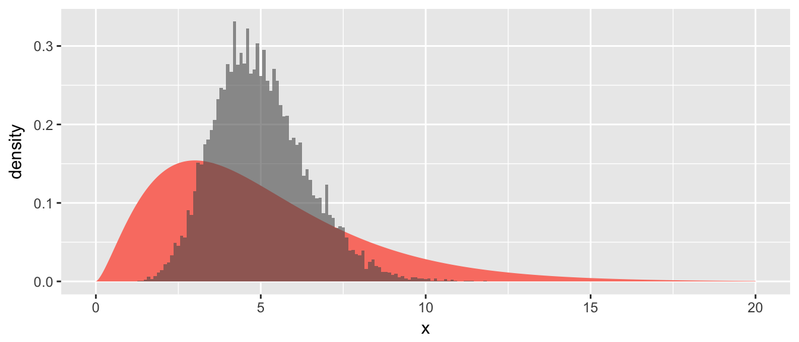

Chapter 4 Sampling Distribution of \(\bar{X}\)
# load the ggplot2 and dplyr packages... which I use constantly.
library(ggplot2)
library(dplyr)
# other packages I'll only use occasionally so instead of loading the
# whole package, I'll just do packageName::functionName() when I use
# the function.In the previous chapter, we using bootstrapping to estimate the sampling distribution of \(\bar{X}\). We then used this bootstrap distribution to calculate a confidence interval for the population mean. We noticed that the sampling distribution of \(\bar{X}\) almost always looked like a normal distribution. Prior to the advent of modern computing, statisticians used a theoretical approximation known as the Central Limit Theorem (CLT). Even today, statistical procedures based on the CLT are widely used and often perform as the corresponding resampling technique. In this chapter we’ll lay the theoretical foundations for the CLT as well as introduce computation
4.1 Enlightening Example
Suppose we are sampling from a population that has a mean of \(\mu=5\) and is skewed. For this example, I’ll use a Chi-squared distribution with parameter \(\nu=5\).
# Population is a Chi-sq distribution with df=5
PopDist <- data.frame(x = seq(0,20,length=10000)) %>%
mutate(density=dchisq(x,df=5))
ggplot(PopDist, aes(x=x, y=density)) +
geom_area(fill='salmon') +
ggtitle('Population Distribution')
We want to estimate the mean \(\mu\) and take a random sample of \(n=5\). Lets do this a few times and notice that the sample mean is never exactly 5, but is a bit off from that.
n <- 5 # Our Sample Size!
mosaic::do(3) * {
Sample.Data <- data.frame( x = rchisq(n,df=5) )
Sample.Data %>% summarise( xbar = mean(x) )
}## xbar
## 1 3.582744
## 2 4.105642
## 3 3.324081n <- 5
SampDist <- mosaic::do(10000) * {
Sample.Data <- data.frame( x = rchisq(n,df=5) )
Sample.Data %>% summarise( xbar = mean(x) )
}We will compare the population distribution to the sampling distribution graphically.
ggplot() +
geom_area(data=PopDist, aes(x=x, y=density), fill='salmon') +
geom_histogram(data=SampDist, aes(x=xbar, y=..density..),
binwidth=.1,
alpha=.6) # alpha is the opacity of the layer
From the histogram of the sample means, we notice three things:
- The sampling distribution of \(\bar{X}\) is centered at the population mean \(\mu\).
- The sampling distribution of \(\bar{X}\) has less spread than the population distribution.
- The sampling distribution of \(\bar{X}\) is less skewed than the population distribution.
4.2 Mathematical details
4.2.1 Probability Rules for Expectations and Variances
Claim: For random variables \(X\) and \(Y\) and constant \(a\) the following statements hold: \[E\left(aX\right) = aE\left(X\right)\] \[Var\left(aX\right) = a^{2}Var\left(X\right)\] \[E\left(X+Y\right) = E\left(X\right)+E\left(Y\right)\] \[E\left(X-Y\right) = E\left(X\right)-E\left(Y\right)\] \[Var\left(X\pm Y\right) = Var\left(X\right)+Var\left(Y\right)\;\textrm{if X,Y are independent}\]
Proving these results is relatively straight forward and is done in almost all introductory probability text books.
4.2.2 Mean and Variance of the Sample Mean
We have been talking about random variables drawn from a known distribution and being able to derive their expected values and variances. We now turn to the mean of a collection of random variables. Because sample values are random, any function of them is also random. So even though the act of calculating a mean is not a random process, the numbers that are feed into the algorithm are random. Thus the sample mean will change from sample to sample and we are interested in how it varies.
Using the rules we have just confirmed, it is easy to calculate the expectation and variance of the sample mean. Given a sample \(X_{1},X_{2},\dots,X_{n}\) of observations where all the observations are independent of each other and all the observations have expectation \(E\left[X_{i}\right]=\mu\) and variance \(Var\left[X_{i}\right]=\sigma^{2}\) then \[\begin{aligned}E\left[\bar{X}\right] &= E\left[\frac{1}{n}\sum_{i=1}^{n}X_{i}\right] \\ &= \frac{1}{n}E\left[\sum_{i=1}^{n}X_{i}\right] \\ &= \frac{1}{n}\sum_{i=1}^{n}E\left[X_{i}\right] \\ &= \frac{1}{n}\sum_{i=1}^{n}\mu \\ &= \frac{1}{n}\,n\mu \\ &= \mu\end{aligned}\] and \[\begin{aligned} Var\left[\bar{X}\right] &= Var\left[\frac{1}{n}\sum_{i=1}^{n}X_{i}\right] \\ &= \frac{1}{n^{2}}Var\left[\sum_{i=1}^{n}X_{i}\right] \\ &= \frac{1}{n^{2}}\sum_{i=1}^{n}Var\left[X_{i}\right] \\ &= \frac{1}{n^{2}}\sum_{i=1}^{n}\sigma^{2} \\ &= \frac{1}{n^{2}}\,n\sigma^{2} \\ &= \frac{\sigma^{2}}{n} \end{aligned}\]
Notice that the sample mean has the same expectation as the original distribution that the samples were pulled from, but it has a smaller variance! So the sample mean is an unbiased estimator of the population mean \(\mu\) and the average distance of the sample mean to the population mean decreases as the sample size becomes larger.
4.3 Distribution of \(\bar{X}\)
If the samples were drawn from a normal distribution
If \(X_{i}\stackrel{iid}{\sim}N\left(\mu,\sigma^{2}\right)\) then it is well known (and proven in most undergraduate probability classes) that \(\bar{X}\) is also normally distributed with a mean and variance that were already established. That is \[\bar{X}\sim N\left(\mu_{\bar{X}}=\mu,\;\sigma_{\bar{X}}^{2}=\frac{\sigma^{2}}{n}\right)\]
Notation: Because the expectations of \(X\) and \(\bar{X}\) are the same, I could drop the subscript for the expectation of \(\bar{X}\) but it is sometimes helpful to be precise. Because the variances are different we will use \(\sigma_{\bar{X}}\) to denote the standard deviation of \(\bar{X}\) and \(\sigma_{\bar{X}}^{2}\) to denote variance of \(\bar{X}\). If there is no subscript, we are referring to the population parameter of the distribution from which we taking the sample from.
Exercise: A researcher measures the wingspan of a captured Mountain Plover three times. Assume that each of these \(X_{i}\) measurements comes from a \(N\left(\mu=6\textrm{ inches},\,\sigma^{2}=1^{2}\textrm{ inch}\right)\) distribution.
What is the probability that the first observation is greater than 7? \[\begin{aligned}P\left(X\ge7\right) &= P\left(\frac{X-\mu}{\sigma}\ge\frac{7-6}{1}\right) \\ &= P\left(Z\ge1\right) \\ &= 0.1587 \end{aligned}\]
What is the distribution of the sample mean? \[\bar{X}\sim N\left(\mu_{\bar{X}}=6,\,\;\sigma_{\bar{X}}^{2}=\frac{1^{2}}{3}\right)\]
What is the probability that the sample mean is greater than 7? \[\begin{aligned}P\left(\bar{X}\ge7\right) &= P\left(\frac{\bar{X}-\mu_{\bar{X}}}{\sigma_{\bar{X}}}\ge\frac{7-6}{\sqrt{\frac{1}{3}}}\right) \\ &= P\left(Z\ge\sqrt{3}\right) \\ &= P\left(Z\ge1.73\right) \\ &= 0.0418 \end{aligned}\]
Example: Suppose that the weight of an adult black bear is normally distributed with standard deviation \(\sigma=50\) pounds. How large a sample do I need to take to be \(95\%\) certain that my sample mean is within \(10\) pounds of the true mean \(\mu\)?
So we want \[\left|\bar{X}-\mu\right| \le 10\] which we rewrite as \[-10 \le\bar{X}-\mu_{\bar{X}}\le 10\]
\[\frac{-10}{\left(\frac{50}{\sqrt{n}}\right)} \le\frac{\bar{X}-\mu_{\bar{X}}}{\sigma_{\bar{X}}}\le \frac{10}{\left(\frac{50}{\sqrt{n}}\right)}\]
\[\frac{-10}{\left(\frac{50}{\sqrt{n}}\right)} \le Z\le \frac{10}{\left(\frac{50}{\sqrt{n}}\right)}\]
Next we look in our standard normal table to find a \(z\)-value such that \(P\left(-z\le Z\le z\right)=0.95\) and that value is \(z=1.96\).
data <- data.frame( z= seq(-3, 3, length=1000) ) %>%
mutate( y = dnorm(z) )
ggplot(data, aes(x=z, y=y)) +
geom_line() +
geom_area( data = data %>% filter(abs(z) <= 1.96), fill='grey', alpha=.7) +
geom_text( x=0, y=.2, label='95%')
So all we need to do is solve the following equation for \(n\) \[1.96 = \frac{10}{ \left( \frac{50}{\sqrt{n}} \right) }\] \[\frac{1.96}{10}\left(50\right) = \sqrt{n}\] \[96 \approx n\]
4.4 Central Limit Theorem
I know of scarcely anything so apt to impress the imagination as the wonderful form of cosmic order expressed by the “Law of Frequency of Error”. The law would have been personified by the Greeks and deified, if they had known of it. It reigns with serenity and in complete self-effacement, amidst the wildest confusion. The huger the mob, and the greater the apparent anarchy, the more perfect is its sway. It is the supreme law of Unreason. Whenever a large sample of chaotic elements are taken in hand and marshaled in the order of their magnitude, an unsuspected and most beautiful form of regularity proves to have been latent all along. - Sir Francis Galton (1822-1911)
It was not surprising that the average of a number of normal random variables is also a normal random variable. Because the average of a number of binomial random variables cannot be binomial since the average could be something besides a \(0\) or \(1\) and the average of Poisson random variables does not have to be an integer. The question arises, what can we say the distribution of the sample mean if the data comes from a non-normal distribution? The answer is quite a lot! Provided the distribution sample from has a non-infinite variance and we have a sufficient sample size.
Central Limit Theorem
Let \(X_{1},\dots X_{n}\) be independent observations collected from a distribution with expectation \(\mu\) and variance \(\sigma^{2}\). Then the distribution of \(\bar{X}\) converges to a normal distribution with expectation \(\mu\) and variance \(\sigma^{2}/n\) as \(n\rightarrow\infty\).
In practice this means that if \(n\) is large (usually \(n>30\) is sufficient), then \[\bar{X}\stackrel{\cdot}{\sim}N\left(\mu_{\bar{X}}=\mu,\,\,\,\sigma_{\bar{X}}^{2}=\frac{\sigma^{2}}{n}\right)\]
So what does this mean?
Variables that are the sum or average of a bunch of other random variables will be close to normal. Example: human height is determined by genetics, pre-natal nutrition, food abundance during adolescence, etc. Similar reasoning explains why the normal distribution shows up surprisingly often in natural science.
With sufficient data, the sample mean will have a known distribution and we can proceed as if the sample mean came from a normal distribution.
Example: Suppose the waiting time from order to delivery at a fast-food restaurant is a exponential random variable with rate \(\lambda=1/2\) minutes and so the expected wait time is \(2\) minutes and the variance is \(4\) minutes. What is the approximate probability that we observe a sample of size \(n=40\) with a mean time greater than \(2.5\) minutes?
\[\begin{aligned}P\left(\bar{X}\ge2.5\right) &= P\left(\frac{\bar{X}-\mu_{\bar{X}}}{\sigma_{\bar{X}}}\ge\frac{2.5-\mu_{\bar{X}}}{\sigma_{\bar{X}}}\right) \\ &\approx P\left(Z\ge\frac{2.5-2}{\frac{2}{\sqrt{40}}}\right) \\ &= P\left(Z\ge1.58\right) \\ &= 0.0571 \end{aligned}\]
# Answer obtained via simulation
SampDist <- mosaic::do(10000) *{ # make 10,000
Sample <- data.frame( x= rexp(n=40, rate=1/2 ) ) # simulated xbar
Sample %>% summarise( xbar = mean( x ) ) # values
}
SampDist %>% # What proportion of those
mutate(Greater = ifelse(xbar >= 2.5, 1, 0)) %>% # xbar values are
summarise( ProportionGreater = mean(Greater) ) # greater than 2.5?## ProportionGreater
## 1 0.0704Summary
Often we have sampled \(n\) elements from some population \(Y_{1},Y_{2},\dots,Y_{n}\) independently and \(E\left(Y_{i}\right)=\mu\) and \(Var\left(Y_{i}\right)=\sigma^{2}\) and we want to understand the distribution of the sample mean, that is we want to understand how the sample mean varies from sample to sample.
\(E\left(\bar{Y}\right)=\mu\). That states that the distribution of the sample mean will centered at \(\mu\). We expect to sometimes take samples where the sample mean is higher than \(\mu\) and sometimes less than \(\mu\), but the average underestimate is the same magnitude as the average overestimate.
\(Var\left(\bar{Y}\right)=\frac{\sigma^{2}}{n}\). This states that as our sample size increases, we trust the sample mean to be close to \(\mu\). The larger the sample size, the greater our expectation that the \(\bar{Y}\) will be close to \(\mu\).
If \(Y_{1},Y_{2},\dots,Y_{n}\) were sampled from a \(N\left(\mu,\sigma^{2}\right)\) distribution then \(\bar{Y}\) is normally distributed. \[\bar{Y} \sim N\left(\mu_{\bar{Y}}=\mu,\;\;\sigma_{\bar{Y}}^{2}=\frac{\sigma^{2}}{n}\right)\]
If \(Y_{1},Y_{2},\dots,Y_{n}\) were sampled from a distribution that is not normal but has mean \(\mu\) and variance \(\sigma^{2}\), and our sample size is large, then \(\bar{Y}\) is approximately normally distributed. \[\bar{Y} \stackrel{\cdot}{\sim} N\left(\mu_{\bar{Y}}=\mu,\;\;\sigma_{\bar{Y}}^{2}=\frac{\sigma^{2}}{n}\right)\]
4.5 Exercises
- Suppose that the amount of fluid in a small can of soda can be well approximated by a Normal distribution. Let \(X\) be the amount of soda (in milliliters) in a single can and \(X\sim N\left(\mu=222,\;\sigma=5\right)\).
- \(P\left(X>230\right)=\)
- Suppose we take a random sample of 6 cans such that the six cans are independent. What is the expected value of the mean of those six cans? In other words, what is \(E\left(\bar{X}\right)\)?
- What is \(Var\left(\bar{X}\right)\)? (Recall we denote this as \(\sigma_{\bar{X}}^{2}\))
- What is the standard deviation of \(\bar{X}\)? (Recall we denote this as \(\sigma_{\bar{X}}\))
- What is the probability that the sample mean will be greater than 230 ml? That is, find \(P\left(\bar{X}>230\right)\).
- Suppose that the number of minutes that I spend waiting for my order at Big Foot BBQ can be well approximated by a Normal distribution with mean \(\mu=10\) minutes and standard deviation \(\sigma=1.5\) minutes.
- Tonight I am planning on going to Big Foot BBQ. What is the probability I have to wait less than 9 minutes?
- Over the next month, I’ll visit Big Foot BBQ 5 times. What is the probability that the mean waiting time of those 5 visits is less than 9 minutes? (This assumes independence of visits but because I don’t hit the same restaurant the same night each week, this assumption is probably ok.)
- A bottling company uses a machine to fill bottles with a tasty beverage. The bottles are advertised to contain 300 milliliters (ml), but in reality the amount varies according to a normal distribution with mean \(\mu=298\) ml and standard deviation \(\sigma=3\) ml. (For this problem, we’ll assume \(\sigma\) is known and carry out the calculations accordingly).
- What is the probability that a randomly chosen bottle contains less than 296 ml?
- Given a simple random sample of size \(n=6\) bottles, what is the probability that the sample mean is less than \(296\) ml?
- What is the probability that a single bottle is filled within \(1\) ml of the true mean \(\mu=298\) ml? Hint: Draw the distribution and shade in what probability you want… then convert that to a question about standard normals. To find the answer using a table or R, you need to look up two values and perform a subtraction.
- What is the probability that the mean of \(10\) randomly selected bottles is within \(1\) ml of the mean? What about the mean of a sample of \(n=100\) bottles?
- If a sample of size \(n=50\) has a sample mean of \(\bar{x}=298\), should this be evidence that the filling machine is out of calibration? i.e., assuming the machine has a mean fill amount of \(\mu=300\) and \(\sigma=3\), what is \(P\left(\bar{X}\le298\right)\)?